NAVIGATION: Global: Home | Data
Local: RA-DEC | SDSS Maps | SIMBAD Maps | Profiles | Control | Sigma Graph | Smooth Scans | Raw Scans | Density Scans | Veil Target Area
RA-Dec Maps are scans with RA as x axis and Dec as y axis.
SDSS and SIMBAD Scans show per-catalog Density Scans.
Profile Scans show Density Graphs per dimension.
Control and Target Scans show The Veil vs its surroundings Density areas.
The z-Dec Density Scan shows the density across 2 axes of y(Dec) and x(z) useful for figuring the depth of The Veil.
Sigma Scan is a scan meant to find the probability of survey error and considers the likelihood of such an object being real.
Smooth and Raw Scans are the scans that use the Gaussian blur of values 1.2 and 0 respectfully.
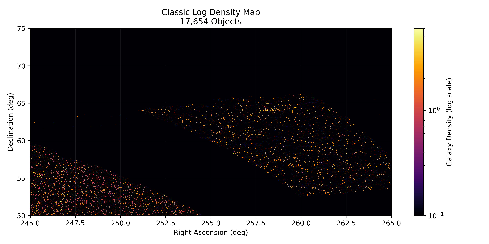
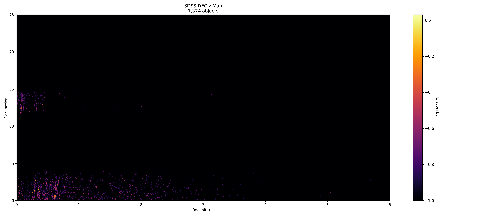
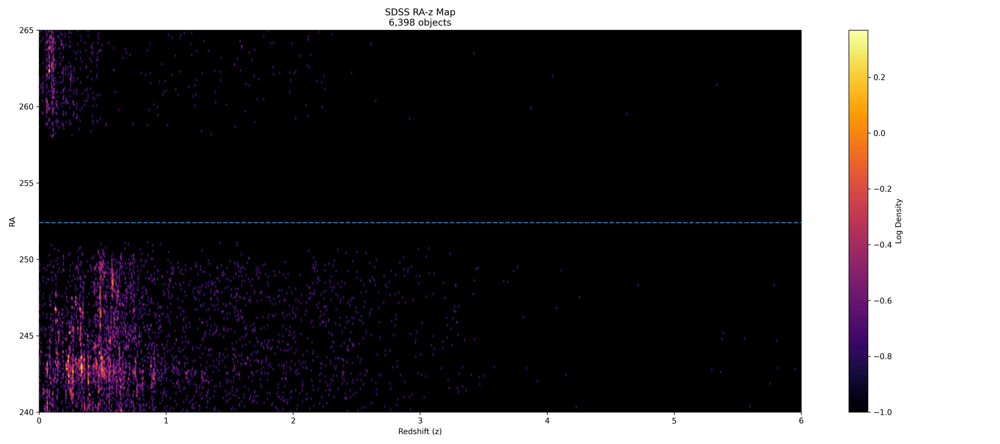
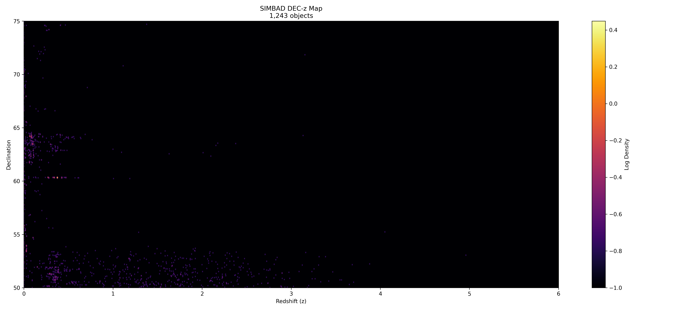
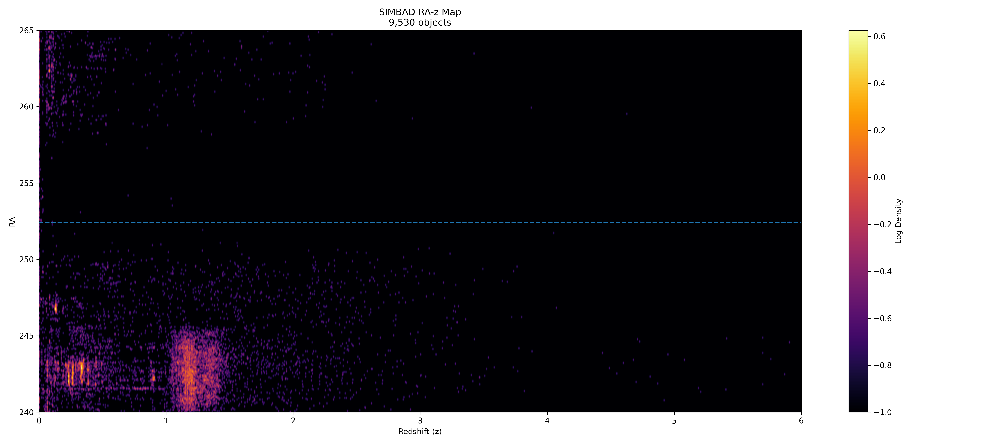
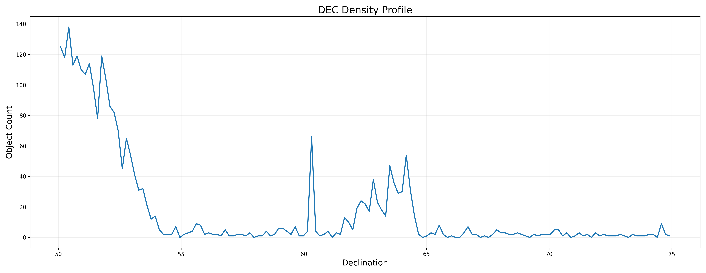
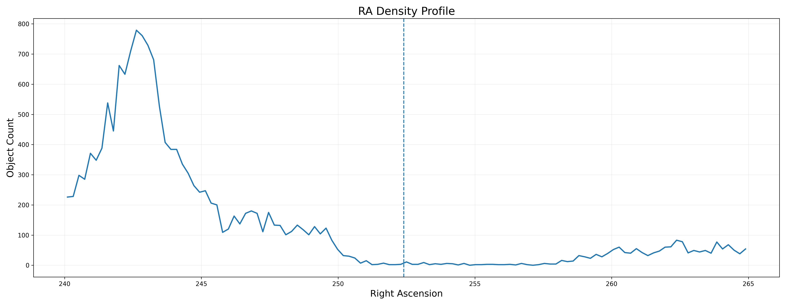
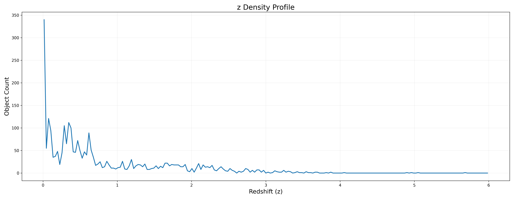
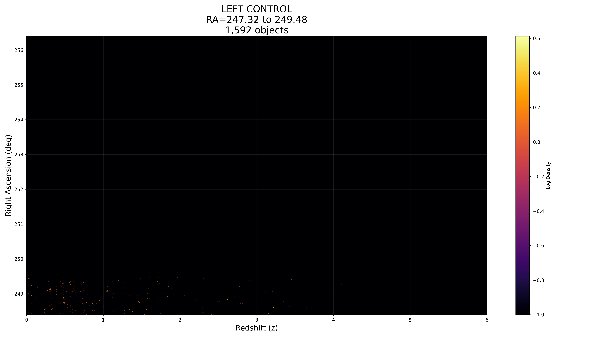
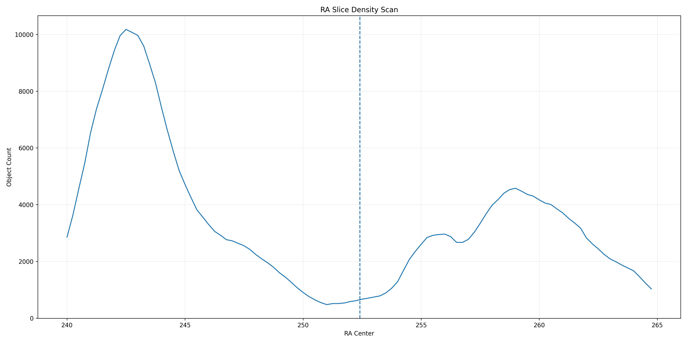
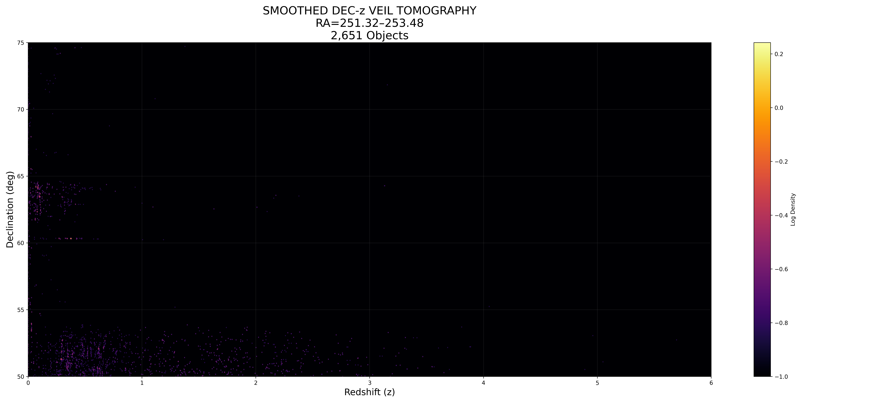
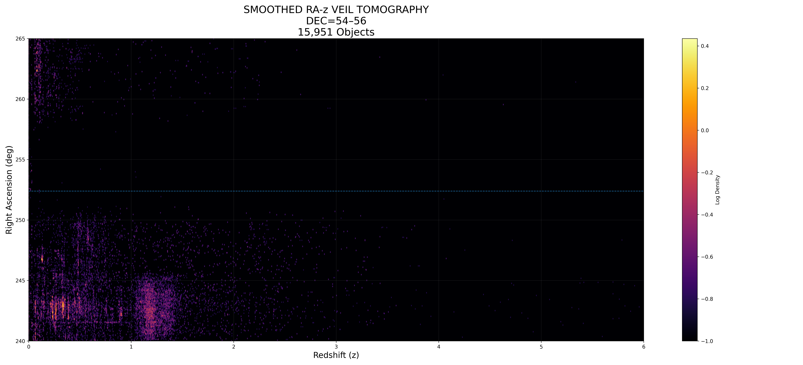
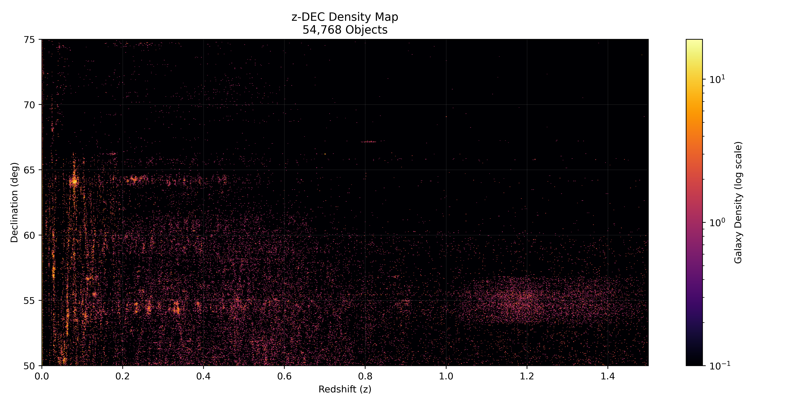